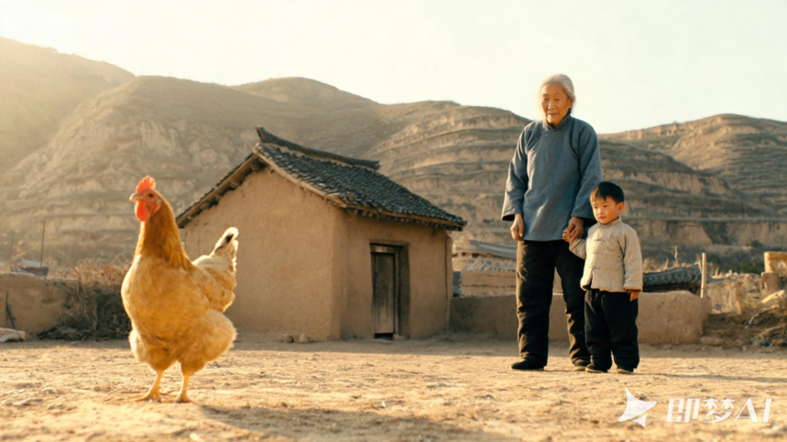

如果要养宠物，我会养一只鸡

真正的"培养"未必需要刻意记录或标签化，它存在于日常细节、无声互动与情感沉淀之中。 情感联结不依赖于语言或物种，而建立于持续的共处、信任与彼此回应之中。
- 我不擅长讲述故事，我试图把我非常小的时候关于一只母鸡的故事，用我自己的语言讲出来。我想尽量把细节描写得更丰富、更真实，但我不会去刻意减少叙述，而是更多地呈现我自己的感受。
我想讲个一只母鸡的故事。
昨天在英语角我们谈到一个话题叫"cultivate"，培养相关的话题，培养自己、植物和动物。
我们谈到第一个问题是：你有没有在长时间中培养过一个动物或植物？你的感受是什么？当时轮到我去回答这个问题的时候，其实我没有想出来。
我没有养过任何的植物和动物，所以说我说我这个跳过吧。等整个议程结束之后，我突然想到一个我特别特别小时候的一个故事。在我特别小的时候，因为我们是在一个北方西北的一个农村的环境当中，那时候也比较穷，所以在乡下会养很多动物。那时候我是跟我奶奶长大的，这个故事应该是在七岁之前，但具体几岁可能还比七岁小，可能是三四岁，我估计应该是三四岁的时候，因为我印象里特别小。
一、一只会啄人的母鸡
因为我们会去养一些动物，但那时候养动物不是为了情绪价值。因为养猫和狗是带来情绪价值的，所以叫宠物。但我们那时候养东西都是为了让自己的生活更好一点，所以我们去养一只母鸡。养鸡是我奶奶一直会做的事，我小的时候她一直在养。养的原因很简单，因为它可以产蛋。并不是因为它能赚很多钱，但在那几年里，我们陆陆续续养了很多只鸡，主要是母鸡偏多，因为母鸡会下蛋。
但我有一只母鸡印象特别深，因为它非常独特和特别。我记得它是一只母鸡，但它竟然拥有啄人的能力。小时候我特别害怕公鸡啄人，现在可能很多人都感受不到了。但我小时候到现在还记得，看到公鸡全身鲜红，看着喜庆，但它特别会啄人，那种感觉特别让小孩子害怕。但我家养的那只母鸡竟然也会啄人。
这只母鸡对小时候的我来说就是一个英雄。
它在做一件特别勇敢的事，它没有局限于自己的天性，而是勇敢地突破自己。因为母鸡本来是不会主动攻击的。小时候其实很多鸡之间会有互啄的现象，你可以看到，有的鸡身上毛都掉光了，不是自然脱落，而是在争抢过程中被其他鸡啄光的，甚至头部或屁股裸露，这是一种霸凌行为。
鸡与鸡之间其实也存在争斗。虽然我当时印象里那只鸡是我们家唯一养的一只，但我们农村是散养状态，人也是散养的。我小时候经常跑出去玩，鸡也经常跑出去，直到晚上才回来，所以它显得很有灵性。我觉得鸡给人的感觉是它从来不寂寞、不孤单，似乎没有情绪——至少从人的感受上无法共情。它总是两条腿走来走去，很独立，又很高傲。
它出去可能会遇到很多其他鸡，包括更强壮的公鸡或其他动物。但在这种环境中，它学会了一种原本不具备的能力——啄人，攻击的能力，保护自己的能力。 我每次看到它，它都是完整的，身上一根毛都没少。
很多小朋友也很调皮，会把鸡赶过来赶过去，不是打它，但有一些玩弄的行为。但我发现这只母鸡会去啄别人，却从来不啄我。 这让我觉得它竟然还认得主人。虽然它不会像狗那样表现亲昵，但它知道谁是它的人。而且它敢于为了保护自己，去对抗体型远大于它的生物。不是表面看来的那样，它是勇敢的，充满灵性的。
二、它失踪了两三周，然后自己回来了
后来发生了一件特别有趣的事。有一段时间，它跑出去了，大概两三个星期没回来。我奶奶很担心，因为那时候大家都很穷，偷盗现象普遍，她怕被人抓走了。
过了两三个星期，我印象中它从山上走下来，回家了。
在这段时间里，我不知道它经历了什么，它也没法告诉我。从它的状态看，它依然独立、高傲，回家时显得很淡然，好像完成了一件轻而易举的事。
我其实很震惊。我在想，它可能曾被人试图捕捉、杀害、吃掉，但它察觉到危险后一直逃跑，也许跑到了从未去过的地方。但它一定记得要回家，记得有一对爱它的主人——一个老人和一个孩子。 它花了很长时间游荡，通过气味、踪迹寻找归途，最终在两三个星期内找到了家。不然它怎么会从完全陌生的环境里回来？
我小时候特别喜欢看它下蛋，很期待这件事。以前觉得鸡蛋特别好吃，下蛋的过程也很有趣。母鸡下蛋前会发出"咕咕咕"的叫声，声音很大，我就赶紧跑去窝里找，总能看到刚下的蛋。拿起来时，蛋还是温热的。 每次我去拿蛋，这只母鸡从不阻止我，也不会护蛋。它好像明白我们在饲养它，也知道我们是为了吃蛋。我们之间仿佛有一种天然的默契。
三、那个夏天，和奶奶
直到后来发生了一件事。一个夏天的午后，天上太阳很大，它在窝里疯狂地叫，声音特别大。我们跑过去时，发现它已经死了。我奶奶说可能是误食了毒药，或者年纪大了自然死亡。我不清楚具体原因。但它死后，我和奶奶都很难过。我和它之间建立了一种平淡却深厚的联系——日常的陪伴，我吃它下的蛋，它默默生活在我们身边。
它死后，我和奶奶走到屋后的山里，挖了个洞把它埋了。 那是一种非常遗憾又充满仪式感的感觉。我奶奶就是这样的人，她对鸡的感情比我还要深。
在前几年我奶奶还在养鸡，后来因为要搬到县城住，不能再养了。她跟我二叔说那些鸡很可怜，不要杀它们，也不要吃它们，最好卖出去。那是她亲手养的鸡。
我还是会想起那只母鸡，飘飘乎如遗世独立。它独立自主而又强大，它从来不需要人去照顾它，它会自力更生。在情绪上，它的陪伴更加有力，有力的倾听，像一棵大树一样。
这会让我想到我奶奶。
爱可以是无声，没有情绪价值的，但必定是有力的。
如果未来我再养一只宠物，我会记得它，我会养一只鸡。